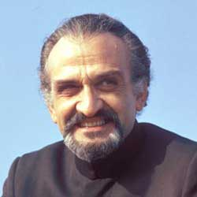

|
| Home The Doctors The Companions The Villains Show History |
Roger DelgadoRoger Caesar Marius Bernard de Delgado Torres Castillo Roberto (1 March 1918 – 18 June 1973) was a British actor, best known as the first actor to play the Master in Doctor Who. |
|
Ryan Moeller |
Ann Marie Skjold |
Content Derived From: |